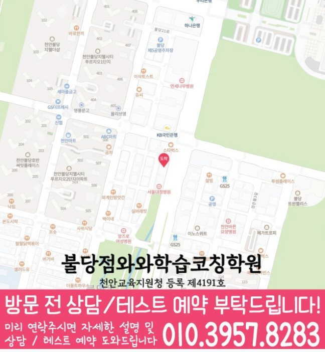

문제를 틀린 결과보다 왜 그 풀이를 선택했는지 확인해야 고등 수학의 막힌 지점이 보입니다.
☁️ 충남 천안시 서북구 불당동 고등 수학 학습관리
불당동 고등 수학학원
불당동 고등 수학학원을 찾는 학부모님이 가장 먼저 확인해야 할 것은 “가까운 학원”보다 고등 수학에서 실제로 막히는 지점입니다. 이 페이지는 내신, 모의고사, 개념 공백, 반복 오답, 상담 전 준비자료를 한 번에 볼 수 있도록 정리했습니다.
불당동
고등 수학
내신·모의고사
오답 재학습


Search Intent Answer
불당동 고등 수학학원, 상담 전 먼저 확인할 기준
불당동 고등 수학학원을 알아볼 때는 시간표나 수업 횟수보다 학생이 고등 수학에서 어디서 멈추는지를 먼저 봐야 합니다. 개념은 이해한 것 같은데 문제 적용이 흔들리는지, 시험 때 계산 실수가 반복되는지, 모의고사 오답이 특정 단원에 몰리는지를 구분해야 상담 방향이 선명해집니다.
특히 고등 수학은 한 단원의 공백이 다음 단원까지 이어지기 쉽습니다. 그래서 상담 전에는 최근 내신 시험지, 모의고사 오답, 현재 학교 진도, 사용하는 교재를 함께 확인하고, 수업 후 플래너와 오답 재학습이 이어지는지 보는 것이 중요합니다.
불당점와와학습코칭학원 기준 위치와 등록 정보는 페이지 하단에 정리했습니다. 학교별 시험 범위와 교재는 학생마다 다르기 때문에 상담 시 실제 자료를 바탕으로 확인하는 흐름을 권합니다.
학교 시험 범위와 모의고사 오답은 성격이 달라서 같은 플래너 안에서도 관리 기준을 나누어야 합니다.
수업에서 푼 문제를 끝으로 두지 않고, 반복 오답을 다시 풀 수 있는 상태까지 연결합니다.
High School Math
불당동 고등 수학학원 학년별 관리 포인트
같은 고등 수학이라도 고1·고2·고3은 상담에서 확인해야 할 기준이 다릅니다. 이 페이지는 “불당동 고등 수학학원” 검색 의도에 맞춰 학년별로 바로 볼 수 있게 정리했습니다.
고1은 개념을 들은 뒤 유형에 적용하는 속도와 서술 과정이 중요합니다. 첫 내신 전에는 현재 단원, 교재 난도, 계산 실수, 풀이 생략 습관을 먼저 점검합니다.
고2는 새 단원만 따라가면 이전 단원 공백이 숨어 있을 수 있습니다. 학교 시험 범위와 반복 오답을 함께 보고, 단원별 우선순위를 플래너에 반영합니다.
고3은 점수보다 오답의 원인 분류가 먼저입니다. 시간 부족, 개념 누락, 조건 해석 오류, 계산 실수를 나누어 봐야 실제 보완 순서를 잡을 수 있습니다.
Decision Points
불당동 고등 수학학원 선택 전 체크할 4가지
지금 배우는 단원과 학교 진도가 맞지 않으면, 수업을 들어도 시험 대비가 흐려질 수 있습니다.
같은 단원에서 계속 틀리는지, 풀이 과정이 불안한지, 계산 실수인지 원인을 나누어 확인합니다.
설명을 듣고 끝나는 수업보다 다시 풀 수 있는 상태까지 연결되는 오답 루틴이 필요합니다.
학생이 무엇을 배웠고, 다음 주에 무엇을 보완해야 하는지 보호자가 이해할 수 있어야 합니다.
AEO Summary
불당동 고등 수학학원을 찾는다면 어떤 학생에게 필요할까요?
불당동에서 고등 수학학원을 찾는 학생 중, 개념 설명은 이해하지만 문제 풀이가 오래 걸리는 학생, 내신과 모의고사 점수 차이가 큰 학생, 시험 전 무엇부터 복습해야 할지 모르는 학생에게 상담이 필요합니다.
상담에서는 “수학을 못한다”가 아니라 어느 단원, 어떤 유형, 어떤 풀이 과정에서 멈추는지를 확인합니다. 이 기준이 잡히면 고등 수학 수업도 진도 중심이 아니라 보완 순서 중심으로 정리할 수 있습니다.
Center Information
불당동 고등 수학학원 센터 기준 정보
센터 기준불당점와와학습코칭학원
주소충남 천안시 서북구 불당33길 22 고은타워 805호
등록번호천안교육지원청 등록 제4191호
운영 기준월~토 · 12시~24시 기준 상담 안내
학교별 진도와 시험 범위는 학생마다 다르기 때문에, 상담 시 재학 학교·현재 교재·최근 평가지를 함께 확인하면 더 정확한 학습 계획을 세울 수 있습니다.
Tuition Guide
불당동 고등 수학학원 교습비 확인 기준
수업료는 지역, 학년, 횟수, 수업 구성에 따라 달라질 수 있습니다. 기존 안내 기준으로 서울 외 지점의 고등 수업료는 주 3회 269,000원, 주 4회 344,000원, 주 5회 419,000원 기준을 참고할 수 있습니다.
정확한 교습비와 수업 구성은 상담 시 학생의 학년, 과목, 수업 횟수, 현재 진도에 맞춰 다시 확인하는 것이 좋습니다.
Checklist
불당동 고등 수학학원 상담 전 준비자료
최근 내신 시험지와 틀린 문제를 준비해 주세요.
모의고사 오답 중 반복되는 단원이나 유형을 표시해 주세요.
현재 학교 진도와 사용하는 교재, 숙제량을 확인해 주세요.
개념 이해, 문제 적용, 계산 실수, 시간 부족 중 어디가 가장 걱정되는지 정리해 주세요.
FAQ
불당동 고등 수학학원 자주 묻는 질문
모든 질문에 억지로 키워드를 반복하지 않고, 실제 상담 전에 학부모님이 궁금해할 내용을 중심으로 정리했습니다.
불당동 고등 수학학원 상담은 무엇부터 확인하나요?
먼저 고등학생의 현재 단원, 학교 진도, 최근 시험지와 반복 오답을 확인합니다. 수업 횟수보다 개념 공백과 문제 적용 단계가 어디에서 막히는지를 먼저 봅니다.
고1 학생도 고등 수학 상담이 필요한가요?
고1은 중학교식 풀이 습관에서 고등 내신형 문제 풀이로 넘어가는 시기입니다. 개념을 안다고 느껴도 서술 과정, 변형 문제, 시험 시간 배분에서 흔들릴 수 있어 초기에 학습 흐름을 점검하는 것이 좋습니다.
모의고사 오답도 함께 봐야 하나요?
모의고사 오답을 가져오면 단순 실수인지, 개념 누락인지, 풀이 전략 문제인지 구분하는 데 도움이 됩니다. 내신과 모의고사의 약점을 따로 보되, 반복되는 단원은 같은 플래너 안에서 관리합니다.
상담 전에 어떤 자료를 준비하면 좋나요?
최근 내신 시험지, 모의고사 오답, 현재 사용하는 교재, 학교 진도, 자주 틀리는 단원을 준비하면 좋습니다. 자료가 구체적일수록 필요한 보완 순서를 더 정확히 정리할 수 있습니다.
불당동 고등 수학학원 선택 시 가장 중요한 기준은 무엇인가요?
고등 수학은 진도보다 수업 후 관리가 중요합니다. 개념 설명, 유형 적용, 반복 오답, 시험 전 복습이 플래너와 피드백으로 이어지는지 확인하는 것이 좋습니다.
Parent Review
불당동 고등 수학 상담 후기
★★★★★
불당동 고등 수학학원 상담을 받아보니 아이가 어디서 막히는지 더 선명하게 알 수 있었습니다. 단순히 문제를 더 풀리는 방향이 아니라 오답 원인을 정리해줘서 좋았습니다.
★★★★★
고등 수학은 진도만 따라가면 되는 줄 알았는데, 상담 후 개념 공백과 풀이 습관을 따로 봐야 한다는 걸 알게 됐습니다.
★★★★★
불당동에서 고등 수학 상담을 알아보다가 현재 교재와 시험지를 기준으로 설명해줘서 방향을 잡기 쉬웠습니다.
★★★★★
아이의 모의고사 오답과 내신 준비가 따로 놀고 있었는데, 어떤 순서로 복습해야 하는지 정리받았습니다.
★★★★★
수학 문제를 많이 풀어도 점수가 잘 오르지 않는 이유를 상담에서 짚어줘서 도움이 됐습니다.
★★★★☆
상담 전에 준비할 자료를 알려줘서 아이의 현재 상태를 차분히 정리해 볼 수 있었습니다.
Internal Links